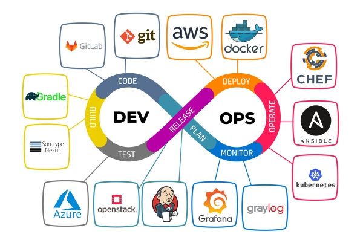
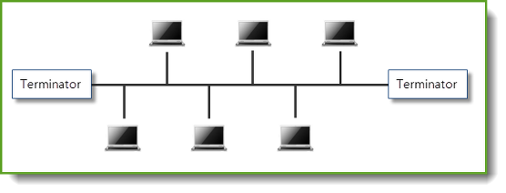

CS (Computer Science)
- 보통 CS 지식 이라고 불리는데 정말 단순히 컴퓨터 지식이다
- 개발자 면접에서 해당 기술을 얼마나 딥하게 알고있는지, 그것과 연개되는 것들이 뭔지를 설명
- 그래서 어설프게 알고있는거 괜히 말하지 말고 확실히 말할 수 있는 기술을 설명하자
인터페이스 (Interface)
서로 별게인 두 시스템 끼리 서로 통신하기 위한 접점 또는 규약
- 인터페이스는 단순 선언이다.
- 다른 두 시스템이 의도한 기능을 하나의
접점을 두고 기능이 맞게 작동하도록 각자 구현하여 접점에 전달하거나, 전달 받는 것으로 구현이 이루어 진다- 보통 그 구현 을 부르는 말을 그냥
구현이라고 부르거나구현체라고도 한다
- 보통 그 구현 을 부르는 말을 그냥
하드웨어 인터페이스
- 예를들어 리모콘에 볼륨 버튼을 누르면 볼륨이 조절 되야 하는건 상식이다
- 그니까 리모컨과 TV 사이 서로 통신 규약을 설정한 것이다
API (Applicaion Programming Interface)
응용 프로그램 인터페이스
- 사실 인터페이스는 포괄적인 개념이고 소프트웨어에서는 그냥 API다
- 서로 물리적 또는 논리적으로 떨어진 두 프로그램간의 소통을 위해 규약을 정한것
DevOps (Development Operations)
참고자료
소프트웨어 개발과 운영을 통합하여 효율성, 협력, 속도, 안정성을 개선 하는 개발 방법론
특정 용어라기 보다는 개발 철학에 가까움으로 하나로 정의하긴 좀 힘든

- 소프트웨어 개발부터, 운영, 모니터링 까지 전체적인 생명주기를 관리
- 이를 담당하는 사람을
DevOps 엔지니어라고 한다 - 방법론으로는
스크럼,칸반,애자일등이 존재한다
5가지 철학
문화: 아래 사항에 따라 적절한 설계방식을 구상한다- 사람, 일, 서비스, 자원, 시간
자동화: 아래 사항을 모두 고려 하여 자동화 시스템을 구축 하게 된다- 인프라 및 보안, 언어 및 도구, CI/CD, 모니터링
측정:- 변경 사항이 발생 시 항상 측정하고
- 성능과 개발 속도를 모니터링 한다
공유:- 언제든지 접근 가능한 투명한 데이터
- 지식을 공유하는 마인드를 가지고
- 문제 발생시 함께 해결해 나가야하고
- 일에 가속도가 늘어야 한다
축적:- 성공과 실패의 결과는 항상 축적되야 한다
CI/CD
애플리케이션 개발 단계부터 배포까지의 모든 단계를 자동화 하는것을 말함
- DevOps의 핵심 업무 이기도 하다
CI (Continuous Integration)
지속적인 통합
- git 같은 형성관리툴에서 main repo에 통합되는 것을 의미
- 많은 양의 커밋을 한번에 통합 하려고 한다면 분명히 많은 충돌을 야기 할 수 있다
- 그렇기에 작은 단위 커밋을 작성하고 지속적으로 통합하는 것이 중요하다
- 이렇게 통합한 프로젝트를 빌드하고 버그가 있는지 테스트 해보는 것 까지를 의미 한다.
CI 의 자동화
대표적으로 github actions prettier
- 브랜치를 통합하는 과정에서 버그가 있는지 코드가 적절히 포매팅 되있는지 확인하는 것은 여간 귀찮은 것이다
- CI 과정을 자동화하여 통합만 진행하고 나머지는 CI툴이 자동으로 빌드, 테스트 를 진행 하게 된다
CD (Continuous Delivery)
지속적인 제공
- CI 단계에서 모든 테스트를 마치고 문제 없는지 한번 더 확인하여 배포를 진행하게 된다
- 이것으로 CI/CD 절차가 끝나는 것이다
CD 의 자동화
대표적으로 github actions gh-pages
- 이것을 자동화 하여 배포를 진행하는것을
지속적인 배포(Continuous Deployment)
대표적인 CI/CD 툴
잰킨즈(Jenkins)Github ActionsGitLab
로드 밸런싱 (Load Balancing)
- 애플리케이션이 위한 모든 리소스에 적절히 네트워크 트레픽을 분산 하는 방법
서비스 디스커버리 (Service Discover)
MSA를 구성한다고 할때 각 서비스들에 대한 IP와 Port 번호를 저장하고 관리하는 방법
URL & URI
- URL: https://github.com/lseoksee/abc
- URI: /lseoksee/abc
클라우드
내부 컴퓨터의 데이터를 인터넷을 통해 중앙 컴퓨터에 보관하는 공간
클라우드 컴퓨팅: 정보를 자신의 pc 가 아니라 클라우드에 연결된 중앙 pc로 처리하는 것
파이프라인
IT에서
코드 작성에서부터 빌드 및 배포까지에 일련에 과정을 자동화 및 효율화 시키는 것
일반적인 의미에서
어떠한 프로젝트가 자금조달 및 기초 조사부터 완료까지에 일련의 처리과정을 의미.
파이프라인 구축 이라는 의미는 이런 처리 과정을 설계하여 효율화 된 프로세스를 구축하는 것.
유닉스
참고자료
리눅스
버스
컴퓨터에서 물리적인 부품 또는, 추상적인 요소들이 연결되는 하나의 통신 경로

대표적인게 네트워크에 버스 형 구조가 있겠다.
여기서 저 기다란 선이 버스라고 불린다.
버스형 구조는 어떠한 광섬유 케이블이든지 또는 통신 프로토콜등에 모든것을 아우른다,